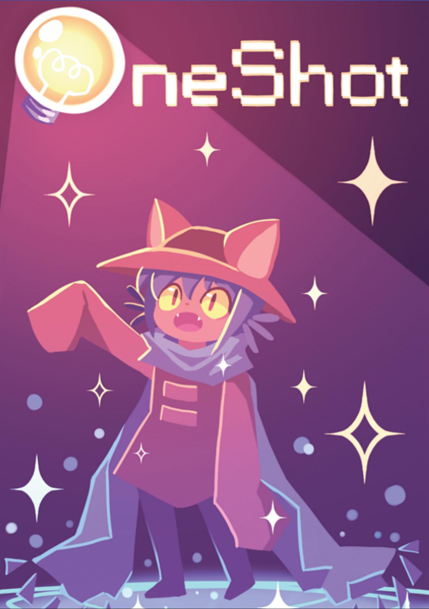

Home
I love OneShot, enjoy this little tribute to an underrated game! And also nice music. OneShot is owned by Future Cat, Nightmargin, Elizaa Velasquez, and so on. Please support the official release.
Welcome to the Niko Shrine
Temporary shelter of the protagonist of the indie cult game, Niko. This warehouse serves as a
safe haven for them as they make their way through The Barrens and onto the Glen, from which point
they will move onwards to the Refuge towards The Tower.

This is Niko, the protagonist of OneShot